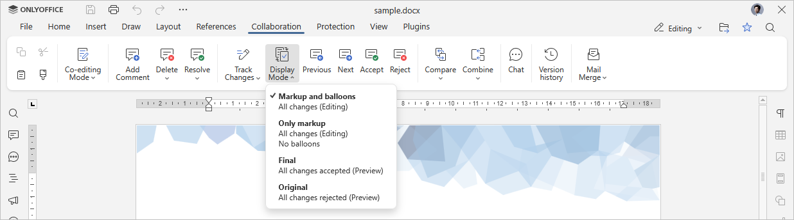
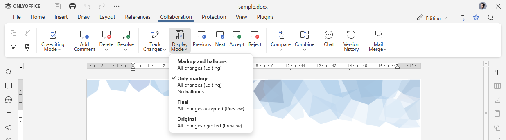
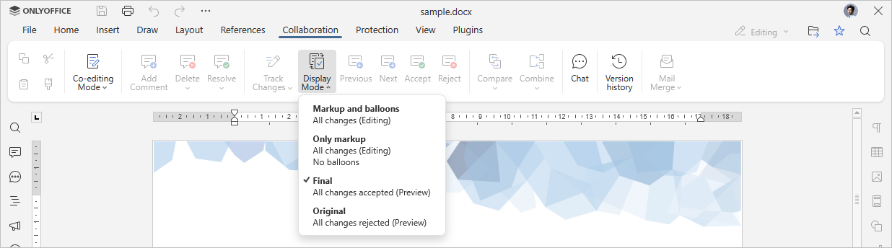
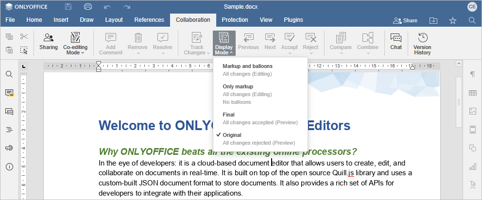
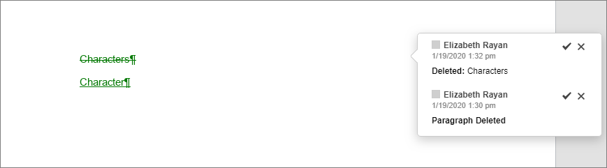

Poređenje i kombinovanje dokumenata
Uređivač dokumenata omogućava vam da održite jedinstven timski pristup radu: delite fajlove i fascikle, zajednički uređujete dokumente u realnom vremenu, komunicirate direktno u uređivaču, komentarišete delove dokumenta koji zahtevaju dodatne sugestije, čuvate verzije dokumenta za kasniju upotrebu, pregledate dokumente i unosite izmene bez direktnog menjanja fajla.
Ako želite da uporedite i spojite dva dokumenta, Uređivač dokumenata nudi funkciju Uporedi. Ona omogućava prikazivanje razlika između dva dokumenta i njihovo spajanje prihvatanjem izmena pojedinačno ili svih odjednom.
Funkcija Kombinuj može izgledati isto, ali sa jednom važnom razlikom – praćene izmene (Tracked Changes) u obe verzije spajaju se u jednu verziju, a ostatak teksta se poredi.
Nakon spajanja dokumenata, rezultat će biti sačuvan na portalu kao nova verzija originalnog fajla.
Ako ne želite da spojite dokumente koji se porede, možete odbiti sve izmene kako bi originalni dokument ostao nepromenjen.
Izbor dokumenta za poređenje
Da biste uporedili dva dokumenta, otvorite originalni dokument i izaberite drugi dokument za poređenje:
- idite na karticu Saradnja na gornjoj alatnoj traci i kliknite na dugme Uporedi,
-
izaberite jednu od sledećih opcija za učitavanje dokumenta:
- opcija Dokument sa fajla otvara standardni dijalog za izbor fajla. Potražite željeni .docx fajl na svom računaru i kliknite na Otvori.
-
opcija Dokument sa URL-a otvara prozor gde možete uneti link ka fajlu sačuvanom u trećem servisu (npr. Nextcloud), ako imate prava pristupa. Link mora biti direktan link za preuzimanje fajla. Kada unesete link, kliknite OK.
Napomena: Direktan link omogućava preuzimanje fajla bez otvaranja u pregledaču. Na primer, u Nextcloudu otvorite meni fajla → opcija Detalji → ikonica Kopiraj direktan link. Za druge servise pogledajte njihovu dokumentaciju.
- opcija Dokument iz skladišta otvara prozor Izbor izvora podataka. Tu se prikazuje lista svih .docx fajlova sa portala kojima imate pristup. Navigaciju kroz sekcije modula Dokumenti vršite pomoću menija sa leve strane. Izaberite dokument i kliknite OK.
- opcija Podešavanja poređenja otvara prozor sa opcijama poređenja. Možete prikazivati izmene na nivou karaktera ili na nivou reči.
Kada je drugi dokument odabran, proces poređenja počinje i dokument se otvara u režimu Pregled. Sve izmene su obeležene bojom i možete ih pregledati, prihvatiti ili odbiti pojedinačno ili sve odjednom. Takođe je moguće menjati režim prikaza: pre poređenja, tokom poređenja ili kako će izgledati posle prihvatanja svih izmena.
Izbor dokumenta za kombinovanje
Da biste kombinovali dva dokumenta, otvorite originalni dokument i izaberite drugi dokument za kombinovanje:
- idite na karticu Saradnja na gornjoj alatnoj traci i kliknite na dugme Kombinuj,
-
izaberite jednu od sledećih opcija za učitavanje dokumenta:
- opcija Dokument sa fajla otvara standardni dijalog za izbor fajla. Potražite željeni .docx fajl na svom računaru i kliknite na Otvori.
-
opcija Dokument sa URL-a otvara prozor gde možete uneti link ka fajlu sačuvanom u trećem servisu (npr. Nextcloud). Link mora biti direktan link za preuzimanje fajla. Kada unesete link, kliknite OK.
Napomena: Direktan link omogućava preuzimanje fajla bez otvaranja u pregledaču. Na primer, u Nextcloudu otvorite meni fajla → opcija Detalji → ikonica Kopiraj direktan link. Za druge servise pogledajte njihovu dokumentaciju.
- opcija Dokument iz skladišta otvara prozor Izbor izvora podataka. Tu se prikazuje lista svih .docx fajlova sa portala kojima imate pristup. Navigaciju kroz sekcije modula Dokumenti vršite pomoću menija sa leve strane. Izaberite dokument i kliknite OK.
- opcija Podešavanja poređenja otvara prozor sa opcijama poređenja. Možete prikazivati izmene na nivou karaktera ili na nivou reči.
Kada je drugi dokument odabran, proces kombinovanja počinje i dokument se otvara u režimu Pregled. Sve izmene su obeležene bojom i možete ih pregledati, prihvatiti ili odbiti pojedinačno ili sve odjednom. Takođe je moguće menjati režim prikaza: pre kombinovanja, tokom kombinovanja ili kako će izgledati posle prihvatanja svih izmena.
Izbor režima prikaza izmena
Kliknite na dugme Režim prikaza na gornjoj alatnoj traci i izaberite jedan od dostupnih režima:
-
Oznake i oblačići – podrazumevani režim. Prikazuje dokument tokom poređenja/kombinovanja. Omogućava pregled i uređivanje izmena. Oblačići sadrže ime recenzenta, datum i vreme izmene. Pomoću oblačića možete prihvatiti (oznaka ✓) ili odbiti (oznaka ✗) promenu.

-
Samo oznake – koristi se za prikaz dokumenta tokom poređenja/kombinovanja. Omogućava pregled i uređivanje izmena, ali bez oblačića.

-
Konačni – prikazuje dokument nakon poređenja/kombinovanja kao da su sve izmene prihvaćene. Ova opcija ne prihvata stvarno izmene, već samo prikazuje konačan izgled. U ovom režimu ne možete uređivati dokument.

-
Originalni – prikazuje dokument pre poređenja/kombinovanja kao da su sve izmene odbijene. Ne odbija stvarno izmene, već samo prikazuje original. U ovom režimu ne možete uređivati dokument.

Prihvatanje ili odbijanje izmena
Koristite dugmad Prethodno i Sledeće na gornjoj alatnoj traci za navigaciju kroz izmene.
Da prihvatite trenutnu izmenu, možete:
- kliknuti na dugme Prihvati na gornjoj alatnoj traci, ili
- kliknuti na strelicu ispod dugmeta Prihvati i izabrati Prihvati trenutnu izmenu (izmene se prihvataju i prelazi se na sledeću), ili
- kliknuti na dugme Prihvati u iskačućem prozoru izmene.
Da brzo prihvatite sve izmene, kliknite na strelicu ispod dugmeta Prihvati i izaberite opciju Prihvati sve izmene.
Da odbijete trenutnu izmenu, možete:
- kliknuti na dugme Odbij na gornjoj alatnoj traci, ili
- kliknuti na strelicu ispod dugmeta Odbij i izabrati Odbij trenutnu izmenu (izmene se odbijaju i prelazi se na sledeću), ili
- kliknuti na dugme Odbij u iskačućem prozoru izmene.
Da brzo odbijete sve izmene, kliknite na strelicu ispod dugmeta Odbij i izaberite opciju Odbij sve izmene.
Dodatne informacije o poređenju i kombinovanju
Način poređenja
Dokumenti se porede po rečima. Ako reč sadrži promenu makar jednog karaktera (npr. obrisan ili zamenjen karakter), razlika će biti prikazana kao promena cele reči.
Na slici ispod original sadrži reč „Characters“, a dokument za poređenje reč „Character“.

Autorstvo dokumenta
Kada se pokrene proces poređenja, drugi dokument se učitava i poredi sa trenutnim.
- Ako učitani dokument sadrži podatke kojih nema u originalu, oni će biti označeni kao dodati od strane recenzenta.
- Ako original sadrži podatke kojih nema u učitanom dokumentu, oni će biti označeni kao obrisani od strane recenzenta.
Ako su autori oba dokumenta ista osoba, u oblačiću izmene se prikazuje isto ime.
Ako su autori različiti, autor drugog dokumenta se prikazuje kao autor dodatih/obrisanih izmena.
Postojanje praćenih izmena u dokumentu
Ako originalni dokument već sadrži izmene napravljene u režimu pregleda, one će biti prihvaćene u procesu poređenja. Kada izaberete drugi fajl, pojaviće se odgovarajuće upozorenje.
U tom slučaju, kada odaberete režim prikaza Originalni, dokument neće sadržati nikakve izmene.
Ako oba dokumenta sadrže izmene iz režima pregleda, one će biti objedinjene u jednoj verziji tokom kombinovanja.